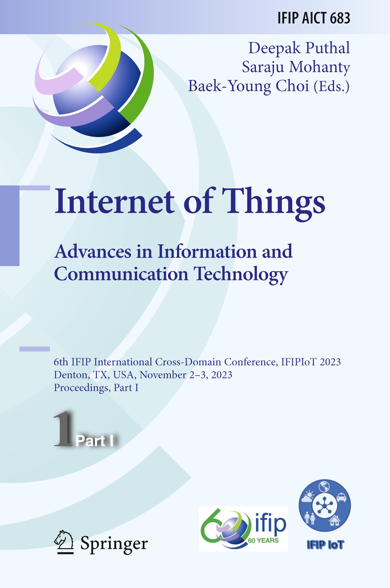
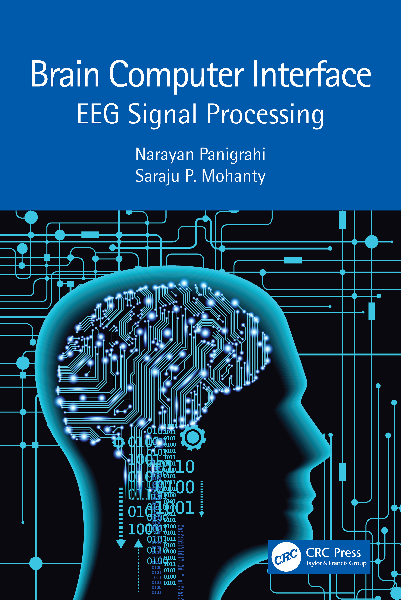
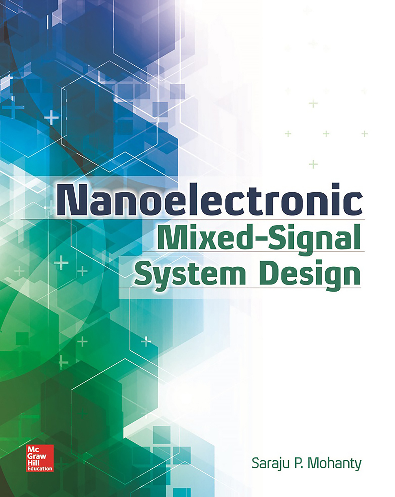
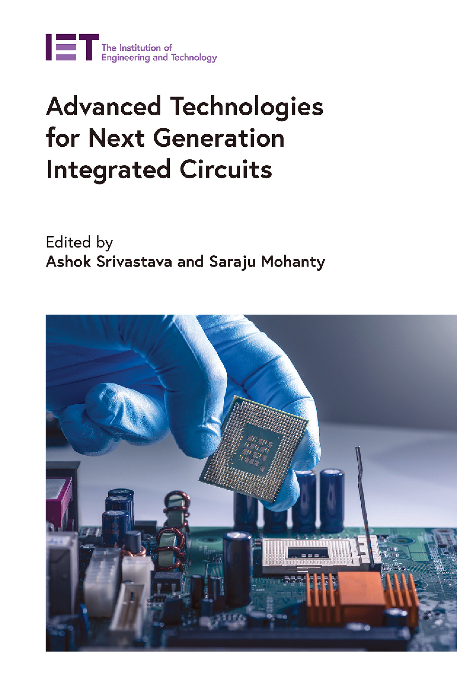
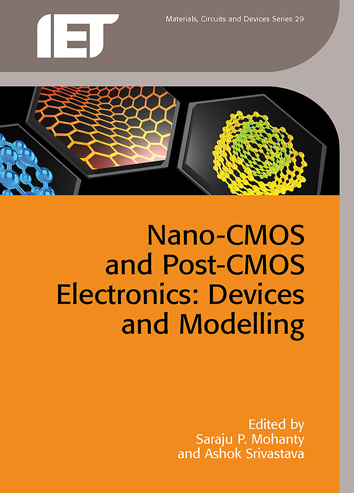
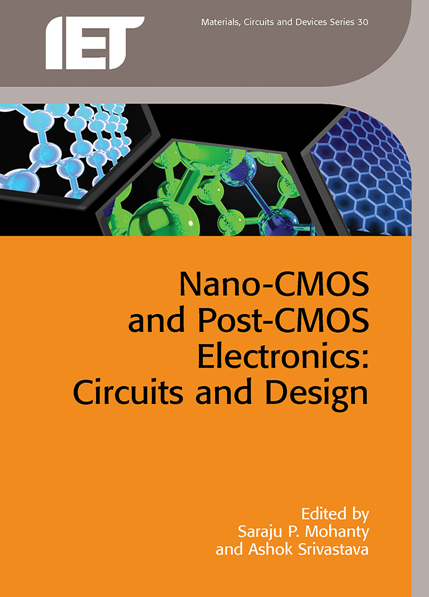
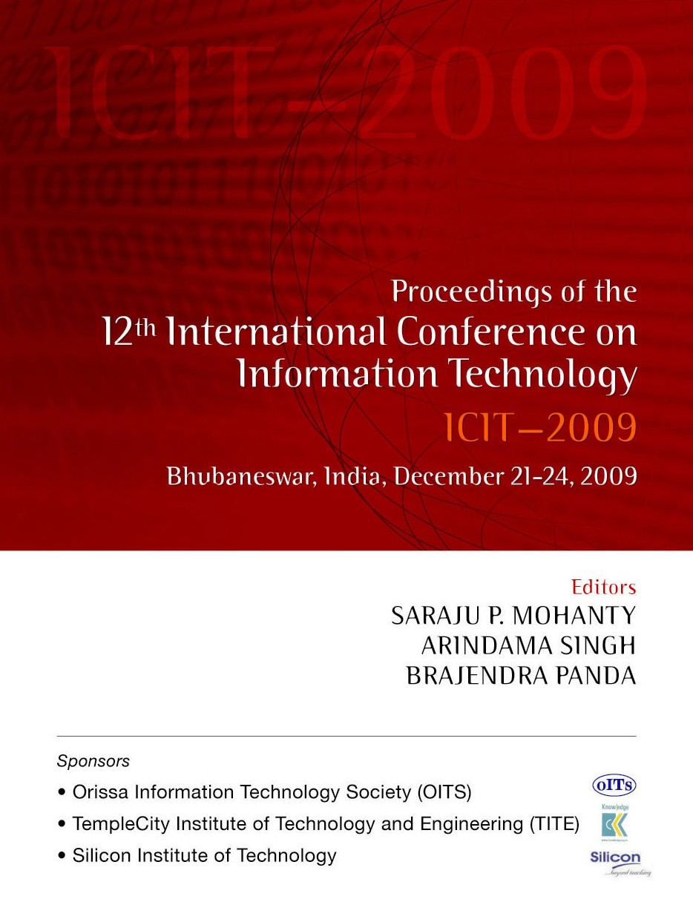

- D. Puthal, S. P. Mohanty, and B. -Y. Choi (Editors), Internet of Things - Advances in Information and Communication Technology, Proceedings of 6th IFIP International Cross-Domain Conference - IFIP-IoT 2023 - Part I, Springer Cham, 2024, ISBN: 978-3-031-45880-4, DOI: https://doi.org/10.1007/978-3-031-45878-1.
- D. Puthal, S. P. Mohanty, and B. -Y. Choi (Editors), Internet of Things - Advances in Information and Communication Technology, Proceedings of 6th IFIP International Cross-Domain Conference - IFIP-IoT 2023 - Part II, Springer Cham, 2024, ISBN: 978-3-031-45884-2, DOI: https://doi.org/10.1007/978-3-031-45882-8.
- N. Panigrahi and S. P. Mohanty, Brain Computer Interface: EEG Signal Processing, CRC Press, 2022, ISBN: 978-1032148410.
- A. Sengupta and S. P. Mohanty, IP Core Protection and Hardware-Assisted Security for Consumer Electronics, The Institute of Engineering and Technology (IET), 2019, ISBN: 978-1785617997.
- S. P. Mohanty, Nanoelectronic Mixed-Signal System Design, McGraw-Hill, 2015, ISBN-10: 0071825711, ISBN-13: 978-0071825719. (Received 2016 PROSE Award for best Textbook in Physical Sciences and Mathematics category from the Association of American Publishers.)
- J. Singh, S. P. Mohanty, and D. K. Pradhan, Robust SRAM Designs and Analysis, Springer, 2012, ISBN-10: 1461408172, ISBN-13: 978-1461408178.
- S. P. Mohanty, N. Ranganathan, E. Kougianos, and P. Patra, Low-Power High-Level Synthesis for Nanoscale CMOS Circuits, Springer, 2008, ISBN-10: 0387764739, ISBN-13: 978-0387764733.
- A. Srivastava and S. P. Mohanty (Editors), Advanced Technologies for Next Generation Integrated Circuits, The Institute of Engineering and Technology (IET), 2020, ISBN-10: 1785616641, ISBN-13: 978-1785616648.
- S. P. Mohanty and A. Srivastava (Editors), Nano-CMOS and Post-CMOS Electronics: Devices and Modelling, The Institute of Engineering and Technology (IET), 2016, ISBN-10: 1849199973, ISBN-13: 978-1849199971.
- S. P. Mohanty and A. Srivastava (Editors), Nano-CMOS and Post-CMOS Electronics: Circuits and Design, The Institute of Engineering and Technology (IET), 2016, ISBN-10: 184919999X, ISBN-13: 978-1849199995.
- S. P. Mohanty, A. Singh, and B.
Panda (Editors), Proceedings of 12th International Conference on Information Technology (ICIT), McGraw-Hill, 2009, ISBN: 978-0-07-068014-2.
{kind=link}
{kind=link}
{kind=link}
{kind=link}
{kind=link}
|  |  | |
|  | ||
|  |  | |
|  |
 |
Book Chapters:
- V. P. Yanambaka, S. P. Mohanty, E. Kougianos, and D. Ghai, "Memristor Devices and Memristor-based Circuits", in Advanced Technologies for Next Generation Integrated Circuits, Edited by A. Srivastava and S. P. Mohanty, The Institute of Engineering and Technology (IET), 2020, ISBN-10: 1785616641, ISBN-13: 978-1785616648.
- A. Sengupta and S. P. Mohanty, "High-Level Synthesis of Digital Integrated Circuits in the Nanoscale Mobile Electronics Era", in Nano-CMOS and Post-CMOS Electronics: Circuits and Design, Edited by S. P. Mohanty and A. Srivastava, The Institute of Engineering and Technology (IET), 2016, ISBN-10: 184919999X, ISBN-13: 978-1849199995.
- E. Kougianos and S. P. Mohanty, "SPICEless RTL Design Optimization of Nanoelectronic Digital Integrated Circuits”", in Nano-CMOS and Post-CMOS Electronics: Circuits and Design, Edited by S. P. Mohanty and A. Srivastava, The Institute of Engineering and Technology (IET), 2016, ISBN-10: 184919999X, ISBN-13: 978-1849199995.
- V. P. Yanambaka, S. P. Mohanty, E. Kougianos, and D. Ghai, "Nanoscale High-K/Metal-Gate CMOS and FinFET based Logic Libraries", in Nano-CMOS and Post-CMOS Electronics: Devices and Modelling, Edited by S. P. Mohanty and A. Srivastava, The Institute of Engineering and Technology (IET), 2016, ISBN-10: 1849199973, ISBN-13: 978-1849199971.
- S. P. Mohanty and E. Kougianos, "Polynomial Metamodel-Based Fast Optimization of Nanoscale PLL Components", in Models, Methods, and Tools for Complex Chip Design: Selected Contributions from FDL 2012, Edited by J. Haase, Springer, 2014, ISBN: 978-3-319-01417-3.
- B. Joshi, D. K. Pradhan, and S. P. Mohanty, “Fault Tolerant Nano-Computing”, in Robust Computing with Nano-scale Devices: Progresses and Challenges, Edited by C. Huang, Springer, 2010, ISBN: 978-90-481-8539-9.
Last updated on 05 Nov 2023 (Sun).
© Saraju Mohanty